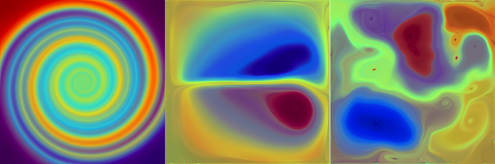

A Discrete Probabilistic Approach to Multiscale Dense Flow Visualization
Victor Matvienko, Tino Weinkauf and Jens Krueger
Abstract
Dense flow visualization
is a popular visualization paradigm.
Traditionally, the various models and methods in this area
use a continuous formulation,
resting upon the solid grounds of functional analysis.
In this work,
we examine a discrete formulation of dense flow visualization.
One of the consequences of such a view is
that it allows an expression of Line Integral Convolution
in terms of linear algebra
as a matrix-vector multiplication,
where the vector represents a noise image
and the sparse matrix holds information
about the integral curves,
the convolution kernel,
and the interpolation method.
This alternative representation can be interpreted
in terms of probability theory
leading to the discovery of a whole new class of visualization models.
We propose a novel visualization approach consisting
in the computation of spectral embeddings,
i.e., characteristic domain maps,
defined by particle mixture probabilities.
These embeddings are scalar fields that give insight
into the mixing processes of flow on different scales.
The structures in these scalar fields are flow aligned.

Datasets and Source Code
drain
spiral vortex flow field (matlab)
ns2
two vertex flow field (matlab)